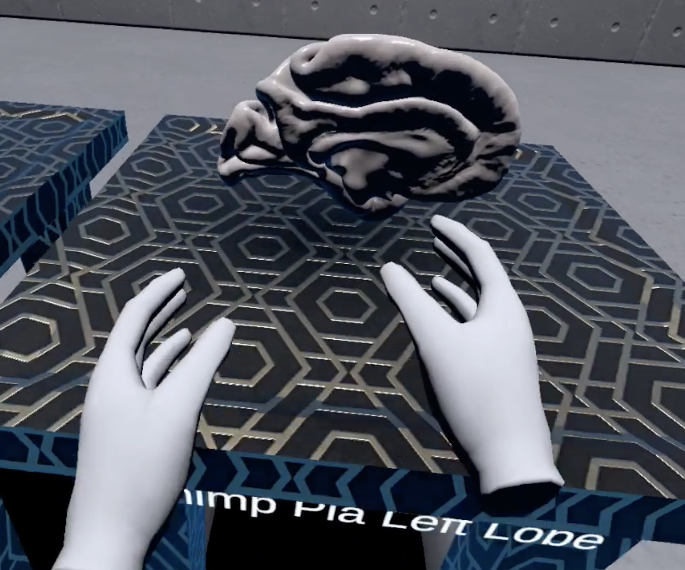

Online Real-time 3D
Structural Health Monitoring
We developed an IoT device (accelerometer sensor) and a real-time cloud based platform to edit 3D model for building structures and displaying its movements.


Virtual Reality (VR)
-
Metaverse Classroom
Investigating student's learning in a metaverse classroom. -
Study how VR can be used in Brain Research
The system architecture for the VR brain application. 
Grabbing a 3D chimpanzee brain in the VR application. Rotating a 3D chimpanzee brain in the VR application. -
New Control Devices for VR